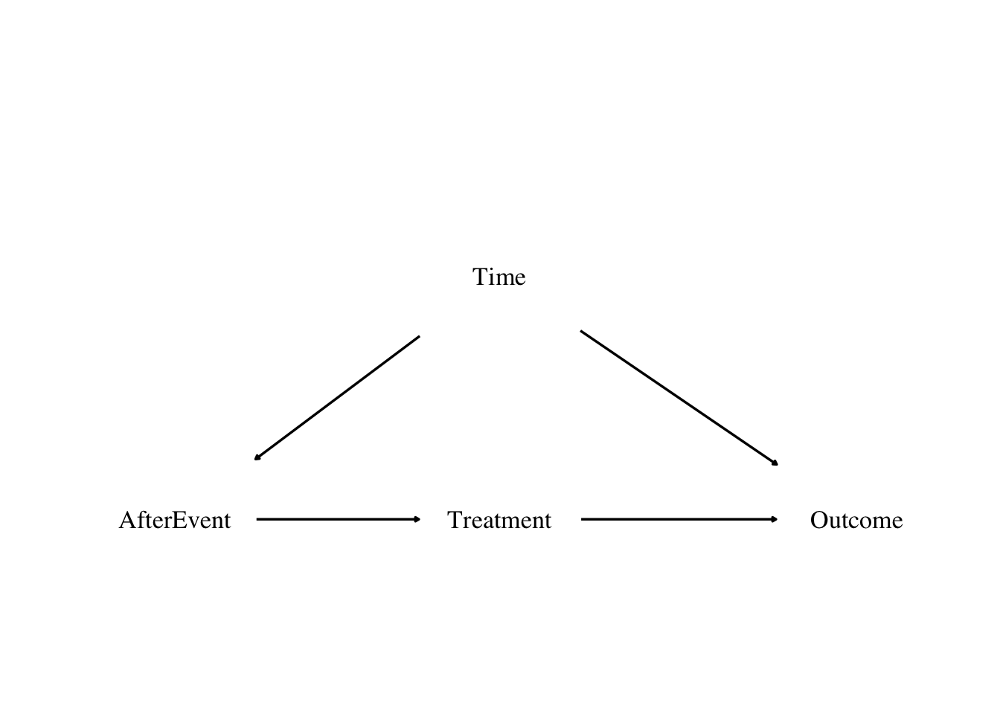
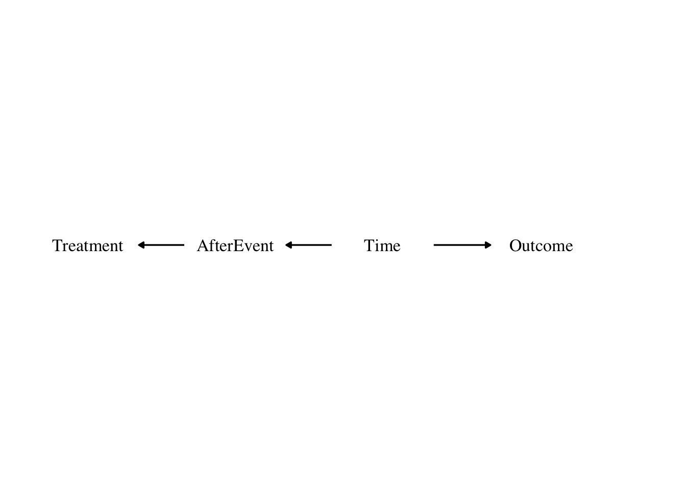
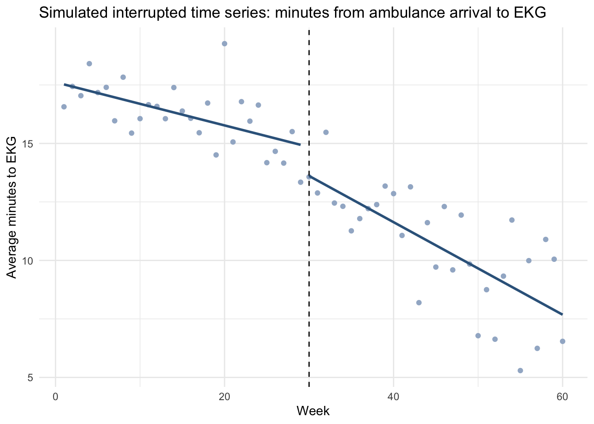
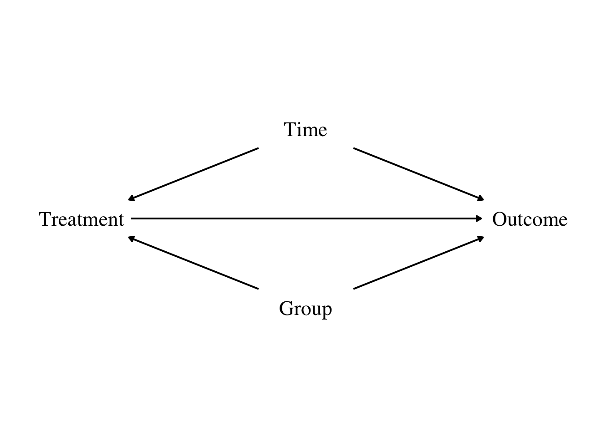
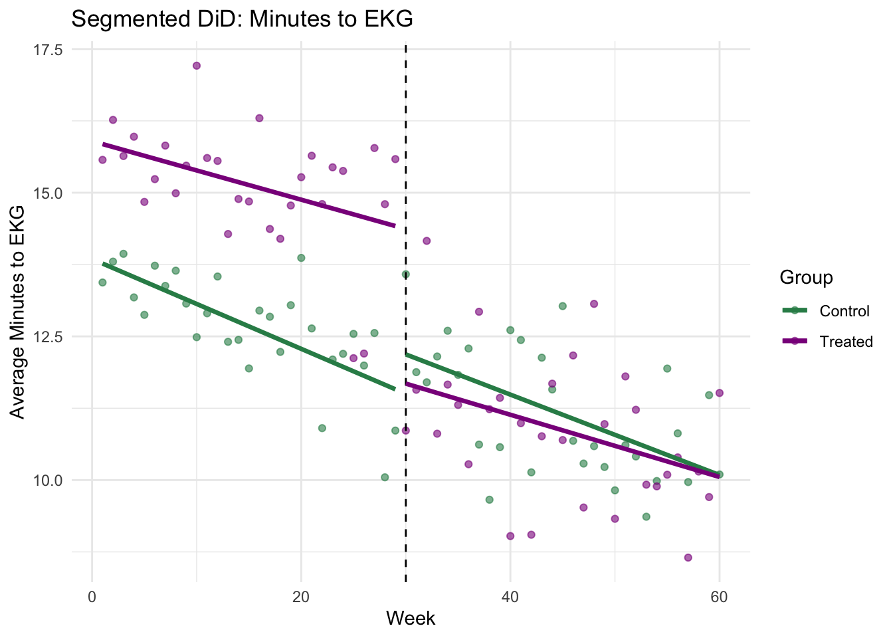
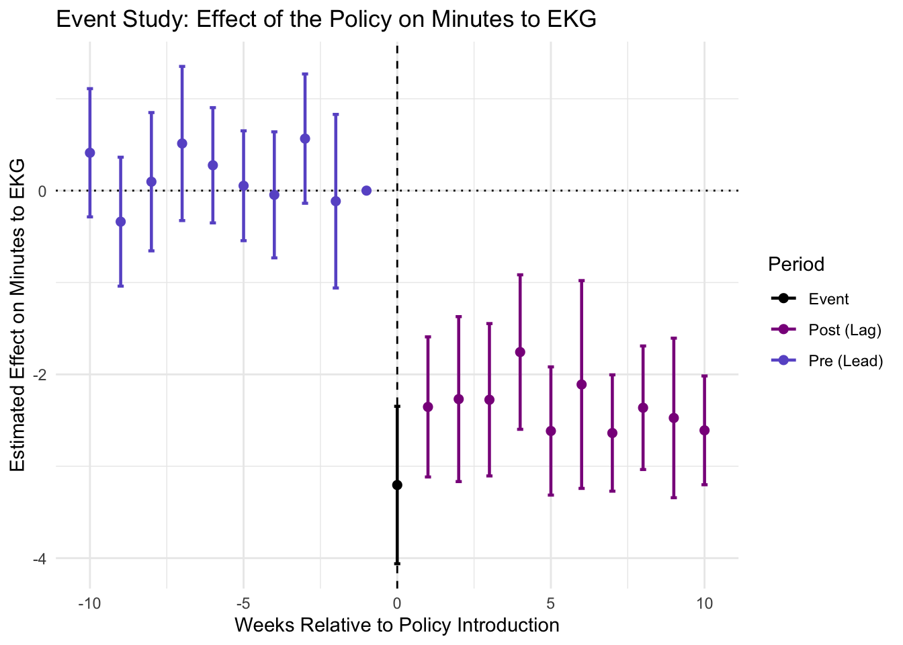

need <- c("AER", "tidyverse", "plm", "sandwich", "lmtest", "knitr", "kableExtra", "grid", "broom", "fixest")
have <- need %in% rownames(installed.packages())
if (any(!have)) install.packages(need[!have])
invisible(lapply(need, library, character.only = TRUE))
source("reporting.R")This is a quick manual function using ggplot2. There are
two packages, ggdag and dagitty, that are
specifically built for causal diagrams but I have never had much luck
with them, though I haven’t spent much time with them either. If you are
planning on spending a lot of time with causal diagrams or directed
acyclical graphs I recommend checking them out! But for now I’m hacking
something together instead.
plot_dag_manual <- function(nodes,
edges,
xlim = NULL,
ylim = NULL,
y_scale = 1,
x_scale = 1,
text_size = 5,
edge_width = 0.6,
arrow_length_pt = 2,
shrink = 0.20,
text_family = NULL) {
nodes_scaled <- nodes |>
mutate(
x = x * x_scale,
y = y * y_scale
)
edge_plot <- edges |>
left_join(nodes_scaled |> select(from = name, x, y), by = "from") |>
left_join(nodes_scaled |> select(to = name, xend = x, yend = y), by = "to") |>
mutate(
dx = xend - x,
dy = yend - y,
edge_length = sqrt(dx^2 + dy^2),
x = x + shrink * dx / edge_length,
y = y + shrink * dy / edge_length,
xend = xend - shrink * dx / edge_length,
yend = yend - shrink * dy / edge_length
)
p <- ggplot() +
geom_segment(
data = edge_plot,
aes(x = x, y = y, xend = xend, yend = yend, linetype = linetype),
arrow = arrow(length = unit(arrow_length_pt, "pt"), type = "closed"),
linewidth = edge_width,
color = "black",
show.legend = FALSE
) +
geom_text(
data = nodes_scaled,
aes(x = x, y = y, label = label),
size = text_size,
color = "black",
family = text_family
) +
theme_void()
if (!is.null(xlim) || !is.null(ylim)) {
p <- p + coord_cartesian(xlim = xlim, ylim = ylim, clip = "off")
}
p
}Before we start on Difference-in-Differences, we’ll quickly discuss Event Studies. This is a very old and simple (maybe the oldest and simplest) causal inference research design model. It’s basically: at some point in time, an event happened. Whatever changed from before the event to after the event is the effect.
So when someone has coffee at 4:00 pm and can’t sleep that night, and therefore decides that coffee ruins their sleep, that’s an event study. Or when someone started using a standing desk five days ago and is now experiencing less back pain, that’s an event study. When a rooster concludes they’re responsible for the sun rising because it rises every morning right after they crow, that’s an event study.
Side note: The Effect Book reminded me of the 1991 movie Rock-a-Doodle, which I think I watched at least 50 times as a child and may have apparently set me up for a lifetime of interest in causal inference. The plot is basically: the rooster thinks his crowing is what causes the sun to rise. One morning he doesn’t crow and the sun rises anyway, plot ensures.
All of these are doing the following: “Compare outcomes before vs. after an event and attribute the difference to the event.”
Event studies are supposed to work in cases where the causal diagram looks like the one below. So at some given point, we move from the “before” period to the “after” period of the event, and a treatment goes into effect.
Here we have
\(Outcome\): the treatment effect we’re interested in, the dependent variable,
\(Treatment\): actual exposure, the causal variable,
\(AfterEvent\): a post-period timing indicator, equal to 1 after the event has occurred, and
\(Time\): calendar time, a confounder.
nodes_event <- tibble(
name = c("Time", "AfterEvent", "Treatment", "Outcome"),
label = c("Time", "AfterEvent", "Treatment", "Outcome"),
x = c(2.0, 0.0, 2.0, 4.2),
y = c(1, 0.0, 0.0, 0.0)
)
edges_event <- tibble(
from = c("Time", "Time", "AfterEvent", "Treatment"),
to = c("AfterEvent", "Outcome", "Treatment", "Outcome"),
linetype = c("solid", "solid", "solid", "solid")
)
plot_dag_manual(
nodes = nodes_event,
edges = edges_event,
xlim = c(-0.8, 4.8),
ylim = c(-.2, .6),
y_scale = .3,
x_scale = 1,
text_size = 4.5,
shrink = 0.5,
text_family = "serif"
)
\(AfterEvent\) here just means the time after the event happened, so the treatment could still be ongoing. The idea is to estimate the effect of the treatment by comparing the outcome before and after outcome: when the treatment has happened (or is still happening) to when it hasn’t.
Looking at the causal diagram, it’s pretty easy to imagine some bad event studies. A lot of superstitions are bad event studies. Like “Ever since I updated this app, my phone battery is worse.” Or “I wore this jersey and my team won, now I wear it every game.” Those are both (bad) event studies.
So when we’re thinking about the causal diagram we have to consider:
Considering whether the diagram actually applies in this instance: is the treatment the only thing that changed from before the event to after the event, or is there something else going on at the same time that might be responsible for the outcomes we see? Event studies aren’t bad, but they only apply in certain situations.
Thinking about how the other route through \(Time\) can be closed.
Because of course there’s another potential causal route:
nodes_line <- tibble(
name = c("Treatment", "AfterEvent", "Time", "Outcome"),
label = c("Treatment", "AfterEvent", "Time", "Outcome"),
x = c(0, 1.3, 2.6, 4),
y = c(0, 0, 0, 0)
)
edges_line <- tibble(
from = c("Time", "AfterEvent", "Time"),
to = c("AfterEvent", "Treatment", "Outcome"),
linetype = "solid"
)
plot_dag_manual(
nodes = nodes_line,
edges = edges_line,
xlim = c(-0.5, 5),
ylim = c(-0.3, 0.3),
y_scale = .6,
text_size = 4.5,
shrink = 0.45,
arrow_length_pt = 4,
text_family = "serif"
)
\(Time\) is “all the stuff that would have changed over time anyway.” Like the rooster actually isn’t responsible for the sun rising because it would have risen otherwise (see: Rock-a-Doodle).
So \(Time\) is doing two things:
It causes the treatment (via \(AfterEvent\))
It directly affects the outcome
If we don’t control for time, we’ll attribute changes in the outcome to treatment when they were actually just due to time passing and would have happened anyway.
So why not just control for \(AfterEvent\)? Because \(AfterEvent \approx Treatment\). They move together perfectly:
So controlling for \(AfterEvent\) would basically mean: “hold treatment constant while estimating the effect of treatment”, which kills the variation we need and we can’t estimate anything.
We can’t compare “before vs after” directly because time itself changes outcomes, but if we hold constant the general effects of time, we can isolate the effect of crossing the event. The problem isn’t that time exists, it’s that time affects both treatment and the outcome. So instead of controlling for “after,” we control for everything about time except the fact that the event happened.
The basic idea is to allow the relationship between time and the outcome to change after the event.
You can do this with the use of an interaction term, also known as “segmented regression.”
So instead of estimating two separate regressions, we estimate one model that lets us have both a different level and a different trend after the event.
\[ Outcome_t = \beta_0 + \beta_1t + \beta_2 After_t + \beta_3 (t \times After_t) + \epsilon_t \] * \(t\) is the time period * \(After_t\) is a binary indicator variable for being after the event (equal to 0 before, 1 after)
This is a within-unit event study. There is only before and after the event, no comparison to a unit who doesn’t get the event (treatment).
Before the event (\(After = 0\))
\[ Outcome_t = \beta_0 + \beta_1 t + \epsilon_t \]
This is the pre-event trend
After the event (\(After = 1\))
\[ Outcome_t = (\beta_0 + \beta_2) + (\beta_1 + \beta_3) t + \epsilon_t \]
This is the post-event trend
The question is, are thing suddenly different? Answer this using \(\beta_2\). Then the question is, are they changing differently over time? Answer this using \(\beta_3\).
We’re asking, did something change at the event, and did the trajectory change afterward? Basically, the question is: what happens at each time, relative to treatment?
So we’re estimating one line before the event and one line after the event, and allowing them to shift up or down (level change) and/ or to tilt differently (trend change).
Event studies are popular in stock market studies, especially when the outcome that is of interest is the stock’s return.
This is because a stock’s price should already reflect the public knowledge about a company, so returns should vary from day to day or as the market changes overall, but should only change sharply if there’s some sort of event (new information revealed about the company). You see this a lot for mergers: if a company announces they’re planning a merger, even though that merger won’t happen for a while, investors buy and sell based on what they anticipate will happen so effects on stock prices will be seen right away.
I mention this because you see these models used quite a bit in finance, but (to be perfectly honest) I’m not that interested in finance, so I’m going to look at another example of an event study.
This is a paper that uses segmented regression to look at changes in in pre-hospital ambulance care given the introduction of a new collaborative intervention administered during ambulance care. It’s the same model that’s covered in The Effect Book, so I’m going to use a similar idea as inspiration for the similation we’ll do.
I’m going to use a similar kind of set-up but with simulated data and a continuous dependent variable: average number of minutes from ambulance arrival to EKG for suspected heart attack patients. An EKG measures the heart’s electrical system to detect irregular rhythms, structural issues, or signs of a heart attack.
A new quality improvement policy is introduced in week 20 to improve emergency cardiac care. Each week, the average number of minutes from ambulance arrival to EKG is observed.
The model:
\[ Y_t = \beta_0 + \beta_1(Week_t - 30) + \beta_2 After_t + \beta_3 [(Week_t - 30) \times After_t] + \epsilon_t \]
where
This means that:
Let’s simulate some data. Feel free to change the data generating process to update data and see the differences!
set.seed(100)
ambulance_sim <- tibble(
week = 1:60
) |>
mutate(
time_centered = week - 30,
after = if_else(week >= 30, 1, 0),
# true coefficients for the simulation
beta_0 = 15, # predicted minutes at week 30 using the pre-intervention line
beta_1 = -0.08, # pre-policy trend: already getting slightly faster at getting patients to EKG
beta_2 = -1.8, # immediate improvement at policy intro
beta_3 = -0.10, # extra post-policy improvement per week
epsilon = rnorm(n(), mean = 0, sd = 1.5),
minutes_to_ekg = beta_0 +
beta_1 * time_centered +
beta_2 * after +
beta_3 * (time_centered * after) +
epsilon
)Now let’s estimate our model:
mod_event <- lm(minutes_to_ekg ~ time_centered + after + time_centered:after, data = ambulance_sim)
mk_coeftab(
mod_event,
mode = "simple",
caption = "event model: minutes to ekg",
)| Term | Estimate | Std. Error | p value |
|---|---|---|---|
| Intercept | 14.849 | 0.558 | <0.001 |
| time_centered | -0.092 | 0.032 | 0.006 |
| after | -1.237 | 0.758 | 0.108 |
| time_centered:after | -0.105 | 0.044 | 0.019 |
We see that the coefficient on \(\beta_2\), the immediate change at the time of the policy, is not significant. We don’t have evidence that there was an immediate change. But the coefficient on \(\beta_3\), the interaction term, is significant, so we have evidence to reject the null that the slope of the line didn’t change after the treatment.
And let’s plot it:
ggplot(ambulance_sim, aes(x = week, y = minutes_to_ekg)) +
geom_point(color = "lightsteelblue3") +
geom_vline(xintercept = 30, linetype = "dashed") +
geom_smooth(
data = subset(ambulance_sim, week < 30),
method = "lm", se = FALSE, color = "steelblue4"
) +
geom_smooth(
data = subset(ambulance_sim, week >= 30),
method = "lm", se = FALSE, color = "steelblue4"
) +
labs(
title = "Simulated interrupted time series: minutes from ambulance arrival to EKG",
x = "Week",
y = "Average minutes to EKG"
) +
theme_minimal()
How do we interpret this?
Let’s remember our model setup:
The model:
\[ Y_t = \beta_0 + \beta_1(Week_t - 30) + \beta_2 After_t + \beta_3 [(Week_t - 30) \times After_t] + \epsilon_t \]
Before the policy starts, \(After_t = 0\), so
\[ Y_t = \beta_0 + \beta_1(Week_t - 30) + \epsilon_t \]
After the policy starts, \(After_t = 1\), so
\[ Y_t = (\beta_0 + \beta_2) + (\beta_1 + \beta_3)(Week_t - 30) + \epsilon_t \]
Then we can interpret the scenario based on our simulated data/ estimated model:
b0 <- coef(mod_event)["(Intercept)"]
b1 <- coef(mod_event)["time_centered"]
b2 <- coef(mod_event)["after"]
b3 <- coef(mod_event)["time_centered:after"]
cat(" * The predicted average minutes to EKG at week 30 based on the pre-policy trend is b0:", round(b0, 2), "\n", "* Before the policy, average time to EKG was already falling by about b1 (", round(b1, 2), ") minutes per week", "\n", "* At the time the policy was introduced, average time to EKG immediately dropped by about b2 (", round(b2, 2), ") minutes", "\n", "* After the policy, the weekly trend became steeper by an additional b3 (", round(b3, 2), ") minutes per week", "\n", "* And the post-policy slope is b1 + b3 (", round(b1 + b3, 2), "), so after the policy time to EKG was decreasing by", round(b1 + b3, 2), "minutes per week instead of", round(b1, 2), "minutes per week as during the pre-policy period")## * The predicted average minutes to EKG at week 30 based on the pre-policy trend is b0: 14.85
## * Before the policy, average time to EKG was already falling by about b1 ( -0.09 ) minutes per week
## * At the time the policy was introduced, average time to EKG immediately dropped by about b2 ( -1.24 ) minutes
## * After the policy, the weekly trend became steeper by an additional b3 ( -0.11 ) minutes per week
## * And the post-policy slope is b1 + b3 ( -0.2 ), so after the policy time to EKG was decreasing by -0.2 minutes per week instead of -0.09 minutes per week as during the pre-policy periodBefore the policy, they were already getting a bit faster at obtaining EKGs. The policy appears to have both produced an immediate drop in average time to EKG (though that change is not significant, as \(\beta_2\) from our regression isn’t significant) and accelerated the rate of improvement afterward (this change is significant, based on the \(\beta_3\) from the model).
For sources, I highly recommend Difference-in-Differences: A Practitioner’s Guide as well as the difference-in-differences chapter of Causal Inference: The Mixtape.
DiD is segmented regression with a comparison group. We’ll add a treatment group, so we have a group who gets the event, and a group that doesn’t (the control).
Let’s consider the causal diagram for a DiD model:
nodes_did <- tibble(
name = c("Time", "Treatment", "Outcome", "Group"),
label = c("Time", "Treatment", "Outcome", "Group"),
x = c(2.5, 0.0, 5.0, 2.5),
y = c(1.2, 0.0, 0.0, -1.2)
)
edges_did <- tibble(
from = c("Time", "Time", "Treatment", "Group", "Group"),
to = c("Treatment", "Outcome", "Outcome", "Treatment", "Outcome"),
linetype = c("solid", "solid", "solid", "solid", "solid")
)
plot_dag_manual(
nodes = nodes_did,
edges = edges_did,
xlim = c(-0.6, 5.6),
ylim = c(-1.6, 1.6),
y_scale = .6,
text_size = 6,
edge_width = 0.7,
arrow_length_pt = 4,
shrink = 0.55,
text_family = "serif"
)
The difference-in-differences model still includes time and a treatment, but now it has something else: a group that hasn’t been treated, the control group.
So what we’re going to do is compare the treated group to itself, before and after the treatment. And also compare the control group to itself, before and after the treated group received the treatment. This way we’re trying to take the treated group and control for what would have happened in it if only time had happened, and not the treatment. So any extra change besides that should be the effect of the treatment.
Make sure to read through the John Snow cholera example in Cunningham’s Causal Inference: The Mixtape ebook (there’s also a print version with even more!) to get a great real-life example of this.
We’re going to add some terms to our model:
We’ll observe weekly average minutes to EKG for both groups.
We now have two dimensions, the group (treated vs. control) and the time (before vs. after). We can write it out the various dimension combinations like:
Step 1: What do we want to know?
We want to figure out the treatment effect on the treated group, so how much the treated group changed:
\[ \text{Treatment effect} = Y_{T, 1} - Y_{T, 0} \] Step 2: The problem
If we just take the change at face value, it includes time effects. How much would the treated group have changed over time, without the treatment?
Which means really:
\[ Y_{T, 1} - Y_{T, 0} = \text{treatment + time effects} \] to solve this, we move on to…
Step 3: Use the control group
The control group gives us:
\[ Y_{C, 1} - Y_{C, 0} = \text{time effects} \] or, what would have happened to the treatment group over time anyway, without the treatment.
Step 4: Difference-in-Differences
Which brings us to the whole “difference-in-differences” thing, which we get by subtracting the two:
\[ \text{DiD} = (\bar{Y}_{T, 1} - \bar{Y}_{T, 0}) - (\bar{Y}_{C, 1} - \bar{Y}_{1, 0}) \]
So we’re comparing how the treated group changed to how the control group changed. Any change in the treated group that is difference to the change in the control group is attributed to the treatment.
This gives us the basic 2x2 difference-in-differences setup:
\[ Y_{gt} = \beta_0 + \beta_1 Treated_g + \beta_2 After_t + \beta_3 (Treated_g \times After_t) + \epsilon_t \]
where
\(Treated\) is an indicator that you’re in the group being treated (whether before or after the treatment)
\(After\) is an indicator that you’re in the post-treatment period (whether or not you’re in the treatment group)
\(Treated \times After\) is an indicator for being in the treated group and the post treatment period, so you’re being treated right now.
\(\beta_0\): baseline for the control group before the policy
\(\beta_1\): baseline difference between treated and control groups before the treatment
\(\beta_2\): the time trend we would expect in the absence of treatment
\(\beta_3\): the DiD estimate, the additional post-policy change for the treated group beyond what happened in the control group.
You can extend DiD to more than two groups or time periods:
\[ Y_{it} = \alpha_i + \lambda_t + \tau Treated_{it} + \delta X_{it} + \epsilon_{it} \] where
\(Y_{it}\) is the outcome for unit \(i\) at time \(t\)
\(\alpha_i\) are the group specific fixed effects (like person, company, state, etc.)
\(\lambda_t\) are the time specific fixed effects (year, month, etc.)
\(\tau\) is the DiD estimate
\(Treated_{it}\) is the treatment indicator for unit \(i\) at time \(t\)
\(X_{it}\) are additional covariates
This is the two-way fixed effects DiD model. This doesn’t do well under staggered treatment adoption though, which is where we see different groups receiving treatment at different times. In those cases, it’s better to use a different method like the one we’ll see below with event leads/ lags. With only two time periods, the model above collapses to the 2x2 DiD model.
The thing is, for DiD to work, before treatment \(Y_{T, 0} - Y_{C, 0}\) would need to have evolved the same without the treatment. We are assuming that there is no time-variant specific unobservables that are different between the groups (treated and control).
This is where the parallel trends assumption comes in. This is the key identifying assumption for DiD. We’re using the control group to answer the question, “what would have happened to the treated group if the policy hadn’t been implemented?”
The parallel trends assumption says that the control group is a valid stand-in for that counterfactual.
Let:
\(Y_{it}(0)\) denote the potential outcome without treatment for unit i at time t
\(D_i = 1\) if unit i is in the treatment group
\(D_i = 0\) if unit i is in the control group
We can then write the parallel trends assumption as:
\[ E[Y_{it}(0) | D_i = 1] - E[Y_{it}(0) | D_i = 0] = \Delta_0\ \text{for all }t \]
Where \(\Delta_0\) is a constant difference over time in the untreated potential outcomes between the two groups. This assumption does not require the levels of outcomes to be the same between groups, only that the difference remains constant over time.
The gap between treatment and control groups in the absence of treatment must remain stable. The groups don’t necessary have to have the same level or be identical, just the same slope over time. If this holds, any deviation from that stable difference after the treatment can be attributed to the causal effect of the treatment.
Of course, this is the counterfactual universe that didn’t actually happen, because the treated group actually was treated. We can’t actually test the parallel trends assumption, just gather support for it.
The parallel trends assumption basically says that, without the treatment, the treated group would have followed the same time trend as the control group.
Anything that makes the treated group evolve differently even without treatment violates the parallel trends assumption.
This can include differences between the two groups pre-treatment (the slopes were already different). It can also include group-specific shocks at the same time (like if the treated group gets a treatment and more funding to carry out the policy at the same time, you’d likely give too much credit to the policy.) There can also be composition changes, like if the treated group starts treating more severe cases over time (if we stick to the hospital example).
If any of these things aren’t true, our estimator is biased. If we remember our DiD formula:
\[ \text{DiD} = (Y_{T, 1} - Y_{T, 0}) - Y_{C, 1} - Y_{1, 0} \]
We’re subtracting
\[ Y_{C, 1} - Y_{1, 0} \]
because we assume it equals the treated group’s time trend without the treatment. If this is wrong, our DiD estimate is biased.
If the treated group was already improving faster, DiD will overstate the treatment effect. If the treated group was already getting worse, it will understate the effect.
We can’t test the assumption directly, but we can look for evidence. Plotting both groups before treatment and seeing if the slopes are roughly parallel is good news; seeing diverging trends before the treatment is not good news for this assumption.
If pre-treatment trends diverge, this threatens validity. If the trends converge, there may be policy effects to consider.
Here’s the thing though: even if pre-trends are parallel, other confounders could still affect the result. It is by definition untestable since we ccan’t observe the counterfactual conditional expectation. We can’t prove DiD is valid, we can just present evidence that supports the assumption.
We’ll look at another option to support the assumption besides visualization after we simulate some data.
Let:
Then the standard DiD model is:
\[ Y_{gt} = \beta_0 + \beta_1 Treated_g + \beta_2 After_t + \beta_3 (Treated_g \times After_t) + \epsilon_t \]
where:
If lower minutes are better (which they are, in this case), then a negative \(\beta_3\) means the policy improved performance.
Let’s simulate some data and estimate a DiD model:
set.seed(100)
b0 <- 14 # baseline control, pre-policy
b1 <- 1.5 # treated group starts slower
b2 <- -0.06 # both groups gradually improve over time
b3 <- -2.0 # policy effect for treated group after week 30
did_sim <- expand_grid(
week = 1:60,
treated = c(0, 1)
) |>
mutate(
after = if_else(week >= 30, 1, 0),
time_centered = week - 30,
# Data-generating process
epsilon = rnorm(n(), mean = 0, sd = 1.0),
minutes_to_ekg = b0 +
b1 * treated +
b2 * week +
b3 * (treated * after) +
epsilon
)Now let’s estimate the model:
mod_did <- lm(minutes_to_ekg ~ treated + after + treated:after, data = did_sim)
mk_coeftab(
mod_did,
mode = "simple",
caption = "DiD model: minutes to EKG",
)| Term | Estimate | Std. Error | p value |
|---|---|---|---|
| Intercept | 12.674 | 0.203 | <0.001 |
| treated | 2.459 | 0.287 | <0.001 |
| after | -1.537 | 0.282 | <0.001 |
| treated:after | -2.731 | 0.399 | <0.001 |
We see in this case that the coefficients are all significant at 1%, so we’ll move directly on to the plotting.
ggplot(did_sim, aes(x = week, y = minutes_to_ekg, color = factor(treated))) +
geom_point(alpha = 0.6) +
geom_vline(xintercept = 30, linetype = "dashed") +
# BEFORE
geom_smooth(
data = subset(did_sim, week < 30),
method = "lm", se = FALSE, linewidth = 1.2
) +
# AFTER
geom_smooth(
data = subset(did_sim, week >= 30),
method = "lm", se = FALSE, linewidth = 1.2
) +
scale_color_manual(
values = c("seagreen4", "darkmagenta"),
labels = c("Control", "Treated")
) +
labs(
title = "Segmented DiD: Minutes to EKG",
x = "Week",
y = "Average Minutes to EKG",
color = "Group"
) +
theme_minimal()
Now instead of one line before and after, we have two groups. The key question that DiD is trying to answer is whether the treated group’s line shifts differently after week 30 compared to the control group. Trends look pretty parallel, which makes sense since they were simulated with the same time trend before treatment.
Let’s go through the interpretation of the basic DiD model:
b0 <- coef(mod_did)["(Intercept)"]
b1 <- coef(mod_did)["treated"]
b2 <- coef(mod_did)["after"]
b3 <- coef(mod_did)["treated:after"]
cat(" * The baseline average minutes to EKG for the control group before the policy is b0:", round(b0, 2), "minutes", "\n", "* The baseline difference between the treated and control groups before the policy is b1 (", round(b1, 2), ") minutes per week", "\n", "* The change over time for the control group after week 30 is b2 (", round(b2, 2), ") minutes", "\n", "* The DiD estimate, the additional post-policy change for the treated group beyond what happened in the control group is b3 (", round(b3, 2), ") minutes per week")## * The baseline average minutes to EKG for the control group before the policy is b0: 12.67 minutes
## * The baseline difference between the treated and control groups before the policy is b1 ( 2.46 ) minutes per week
## * The change over time for the control group after week 30 is b2 ( -1.54 ) minutes
## * The DiD estimate, the additional post-policy change for the treated group beyond what happened in the control group is b3 ( -2.73 ) minutes per weekThat’s why \(\beta_3\) is the DiD estimate, because it’s what we see after we difference out what happened to the control group.
I’d mentioned another way to get some evidence to support the parallel trends assumption. (This is also the better methodology if you have staggered adoption). In this case, instead of one post indicator, we estimate a separate effect for each time period relative to treatment.
This is a special case of that describe in Clarke and Tapia-Schythe’s paper on staggered adoption event studies.
In their setup, different groups adopt the treatment at different times, and some groups never adopt. Those groups are the pure controls. Everything is then aligned in time to the “event time”, relative to the time that the treatment happens.
For our example, instead of having one treatment implemented at week 30 for the treated group there would be group 1 treated at week 20, group 2 treated at time 30, and group 3 (control) never treated.
For our setup, we’re going to use the same setup but without the staggered timing to gather some evidence to support (or not) the parallel trends assumption.
Let’s map this from the original DiD setup.
\[ Y_{gt} = \beta_0 + \beta_1 Treated_g + \beta_2 After_t + \beta_3 (Treated_g \times After_t) + \epsilon_t \] We can rewrite DiD in “event time” language, so we can define
\[ event\_time = t - T_0 \] We can then think of the event time as equaling one if \(t - T_0\) is greater or equal to zero (after the event), which then gives us:
\[ After_t = 1\{event\_time \geq 0\} \] Our interaction term then turns from \(Treated_g \times After_t\) to
\[ Treated_g \times 1\{event\_time \geq 0\} \] Now we replace \(After\) with a full set of time indicators, so instead of
\[ 1\{event\_time \geq 0\} \]
we have
\[ \sum_{k \geq 0} 1\{event\_time = k\} \] So we’ve turned
\[ Treated_g \times After_t \rightarrow \sum_{k \geq 0} Treated_g \times 1\{event\_time = k\} \] That takes care of after the treatment. We also need to add the pre-treatment period, just removing the period just before the treatment as a reference:
\[ \sum_{k \neq 1} Treated_g \times 1\{event\_time = k\} \] So now we have turned the basic 2x2 DiD setup into the event study version:
\[ Y_{gt} = \alpha_g + \lambda_t + \sum_{k \neq -1} \beta_k (Treated_g \times 1\{event\_time = k\}) + \epsilon_{gt} \] where
\(k =\) weeks relative to treatment (like -5, 4, 1, etc.)
\(k = -1\) is left out because it’s the reference time period
The \(\beta_1 Treated_g\) term from the original DiD setup now maps to \(\alpha_g\), the group fixed effect
The \(\beta_2 After_t\) term maps to \(\lambda_t\), the time fixed effect
The \(\beta_3 (Treated_g \times After_t)\) term maps to all post treatment period \(\beta)k\)
2x2 DiD is a restricted event study in which \(\beta_k = \beta_3\) for all \(k \geq 0\) and \(\beta_k = 0\) for all \(k < 0\).
It’s called event leads because leads are the periods before treatment (\(k < 0\)) and the lags are the periods after treatment (\(k \geq 0\)). Leads are like the “fake” treatment effects before the policy (what was already going on) and the lags are the actual treatment effects.
2x2 DiD assumes the treatment effect is the same in every post period. The event study relaxes that by estimating a separate effect for each period. So 2x2 DiD is an average effect, while the event study is the path of the effect over time.
We can use this to gather support for the parallel trends assumption, since under the parallel trends assumption:
\[ \beta_k = 0 \text{ for all } k < 0 \]
So before treatment, the treated and control groups shouldn’t be diverging in any way (it shouldn’t matter if treated or not), so the coefficients on the interaction terms should be equal to zero. After treatment, well hopefully you see an effect! But if you see an upward or downward trend in leads, like the \(\beta_k \neq 0\), then that’s a violation of the assumption.
So in our simulated data, the policy went into effect in week 30. So weeks 1 to 29 would be leads and the lags would be weeks 30 to 60.
Let’s give it a try. The thing is, with the original simulated data and only one observation per group / week, a full lead/ lag event study is too parameter heavy and we’ll end up with over parameterization.
What we need to do instead is to simulate multiple observations per group per week, estimate the event study with the leads and lags relative to week 30 (when the treatment went into place), and then omit one pre period as a reference (usually \(k = -1\)).
In real life, if we couldn’t just simulate away the problem, binning would work. Like event time less than -10 (ten weeks before the treatment went into effect), and then from -2 to -10, and then between week 1 and 5, etc.
But we can simulate data, so we will.
set.seed(123)
did_sim_patients <- expand.grid(
week = 1:60,
treated = c(0, 1),
patient = 1:20
) %>%
as_tibble() %>%
mutate(
after = if_else(week >= 30, 1, 0),
event_time = week - 30,
base = 15, # control group baseline
treated_diff = 0.1 * treated, # treated group starts a bit slower
# both groups improve a bit over time before treatment
common_trend = -0.25 * week,
# treatment effect turns on after week 30
post_treat_effect = -2.5 * (treated * after),
epsilon = rnorm(n(), mean = 0, sd = 1.2),
minutes_to_ekg = base +
treated_diff +
common_trend +
post_treat_effect +
epsilon
)So now we’ve got 60 weeks for the treated and control groups, with 20 patients per group/ week. I’m going to filter to just the 10 periods before and after the event:
Here I’m using fixest because it makes clustered
standard errors way easier. We’ll cluster by patient because
observations for the same patient over time are correlated, and failing
to account for that would make our standard errors too small. Each
patient has repeated observations over time, so errors are likely
correlated within patient.
This is functionally equivalent to
mod_event_study_lm <- feols(minutes_to_ekg ~ factor(week) + factor(patient_id) + treated:event_time_f, data = event_window, cluster = ~ patient),
but if you run that model you’ll get different coefficients. But then
if you test it using
all.equal(fitted(model1), fitted(model2)) you’ll see that
the results are really close. What’s up with that?
fixest does something and stricter by automatically
detecting collinearity and dropping different combinations of variables
and enforcing different normalization. There is collinearity between
event time and the week fixed effect. (You can see some of these issues
with collinearity in the panel illustration sample notebook!) So the
predictions will be the same (you can check by comparing
fitted()) but the coefficients will be different because of
different reference points and different dropped categories.
mod_event_study <- feols(
minutes_to_ekg ~ i(event_time, treated, ref = -1) |
patient + week,
data = event_window,
cluster = ~ patient
)We’ll grab our terms:
event_results <- tidy(mod_event_study) %>%
filter(str_detect(term, "event_time")) %>%
mutate(
event_time = str_extract(term, "-?\\d+") %>% as.numeric()
) %>%
distinct(event_time, .keep_all = TRUE) %>%
select(event_time, estimate, std.error, statistic, p.value)And clean them for presentation (you can just use
tidy(model_name) or summary(model_name), but I
need to make accessible tables for all html files.)
event_results <- bind_rows(
tibble(
event_time = -1,
estimate = 0,
std.error = 0,
statistic = NA_real_,
p.value = NA_real_
),
event_results
) %>%
arrange(event_time) %>%
mutate(
period = case_when(
event_time < 0 ~ "Pre (Lead)",
event_time == 0 ~ "Event",
TRUE ~ "Post (Lag)"
)
)
event_results_clean <- event_results %>%
mutate(
estimate = round(estimate, 3),
std.error = round(std.error, 3),
statistic = round(statistic, 2),
p.value = round(p.value, 3)
)Now let’s take a look. We’re looking to see if any of the coefficients in the pre-period are significant.
kable(
event_results_clean,
col.names = c("Event Time", "Estimate", "Std. Error", "t-stat", "p-value", "Period"),
caption = "Event Study Estimates (Reference = Week -1)",
align = "c",
format = "html",
escape = FALSE
) %>%
kable_styling(
bootstrap_options = c("striped", "hover", "condensed"),
full_width = FALSE,
position = "left"
) %>%
row_spec(0, bold = TRUE) %>%
column_spec(1, bold = TRUE)| Event Time | Estimate | Std. Error | t-stat | p-value | Period |
|---|---|---|---|---|---|
| -10 | 0.412 | 0.356 | 1.16 | 0.261 | Pre (Lead) |
| -9 | -0.338 | 0.358 | -0.94 | 0.357 | Pre (Lead) |
| -8 | 0.097 | 0.384 | 0.25 | 0.803 | Pre (Lead) |
| -7 | 0.513 | 0.428 | 1.20 | 0.245 | Pre (Lead) |
| -6 | 0.276 | 0.320 | 0.86 | 0.399 | Pre (Lead) |
| -5 | 0.053 | 0.305 | 0.17 | 0.864 | Pre (Lead) |
| -4 | -0.046 | 0.350 | -0.13 | 0.896 | Pre (Lead) |
| -3 | 0.566 | 0.359 | 1.58 | 0.132 | Pre (Lead) |
| -2 | -0.115 | 0.482 | -0.24 | 0.813 | Pre (Lead) |
| -1 | 0.000 | 0.000 | NA | NA | Pre (Lead) |
| 0 | -3.204 | 0.437 | -7.33 | 0.000 | Event |
| 1 | -2.354 | 0.389 | -6.05 | 0.000 | Post (Lag) |
| 2 | -2.269 | 0.458 | -4.96 | 0.000 | Post (Lag) |
| 3 | -2.276 | 0.423 | -5.38 | 0.000 | Post (Lag) |
| 4 | -1.757 | 0.429 | -4.10 | 0.001 | Post (Lag) |
| 5 | -2.616 | 0.356 | -7.35 | 0.000 | Post (Lag) |
| 6 | -2.110 | 0.577 | -3.66 | 0.002 | Post (Lag) |
| 7 | -2.638 | 0.323 | -8.18 | 0.000 | Post (Lag) |
| 8 | -2.363 | 0.343 | -6.89 | 0.000 | Post (Lag) |
| 9 | -2.474 | 0.443 | -5.59 | 0.000 | Post (Lag) |
| 10 | -2.609 | 0.302 | -8.65 | 0.000 | Post (Lag) |
We can also plot the interaction coefficients pre and post treatment to get an even better sense of any changes:
ggplot(event_results_clean, aes(x = event_time, y = estimate, color = period)) +
geom_hline(yintercept = 0, linetype = "dotted") +
geom_vline(xintercept = 0, linetype = "dashed") +
geom_point(size = 2) +
geom_errorbar(
aes(
ymin = estimate - 1.96 * std.error,
ymax = estimate + 1.96 * std.error
),
width = 0.2,
linewidth = 0.8
) +
scale_color_manual(
values = c(
"Pre (Lead)" = "slateblue",
"Event" = "black",
"Post (Lag)" = "darkmagenta"
)
) +
labs(
title = "Event Study: Effect of the Policy on Minutes to EKG",
x = "Weeks Relative to Policy Introduction",
y = "Estimated Effect on Minutes to EKG",
color = "Period"
) +
theme_minimal()
This shows the estimated effect of the policy over time relative to week 30 (event time 0). Each point represents the difference between the treated and control groups at a given week.
The lead values should be close to zero if the parallel trends assumption holds, so the treated and control groups were similar before the treatment. The vertical dashed line marks when the policy begins.
After that point, the lags show how the treatment effect happens over time. We see that there’s a clear shift away from zero after the treatment, so we have evidence that the intervention had an effect. The pattern over the following weeks shows whether that effect is immediate, gradual, persistent, etc.
The \(\beta_3\) from the original 2x2 DiD setup was a single average treatment effect for all the post treatment periods, and assumes the effect is constant over time.
Here, each \(\beta_k\) is a time specific treatment effect, one for each week after the treatment. It’s equal to the difference between treated and control at time \(k\), relative to the difference between treated and control in the reference period: \(\beta_k = (\bar{Y}_{T, k} - \bar{Y}_{C, k}) - (\bar{Y}_{T, -1} - \bar{Y}_{C, -1})\), if \(k = -1\) is the reference period. It’s a difference-in-differences at each time point. Each event-study coefficient is a difference-in-differences estimate at a specific time relative to the policy.
If \(\beta_k = 0\) for all \(k < 0\), then treated and control evolve similarly pre-treatment (we have support for parallel trends). If \(\beta_k \neq 0\) for \(k \geq 0\), then treatment has an effect at that time.
The simplest event study compares outcomes for a single group before and after a treatment policy change. It looks at how the outcome changes before and after the treatment. This approach is intuitive and easy to visualize, but it relies on a strong assumption, that nothing else changed at the same time that could explain the observed shift. Without a comparison group, it is difficult to rule out other time-related factors, so this design is best viewed as descriptive rather than causal on its own.
The 2×2 DiD design compares treated and control groups before and after a policy to isolate a causal effect. It works by subtracting out two things, the baseline differences between groups and common changes over time. The key identifying assumption is parallel trends. This is needed because the idea of parallel trends is that, without the policy, the difference between treated and control groups would have remained constant. Under this assumption, the interaction term captures the causal effect.
In more complex settings where treatment is staggered across groups/ times, event studies use leads and lags to align units in “event time” and estimate effects relative to each group’s adoption. This helps us estimate both how treatment effects evolve over time and also provides evidence to support the parallel trends assumption. The lead coefficients (pre-treatment periods) should be close to zero if treated and control groups were changing similarly before treatment. Any systematic differences before the event suggest the identifying assumption of parallel trends may be violated.